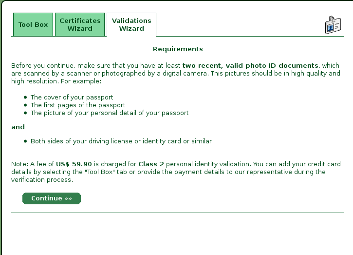

A registration authority (RA) is responsible for the validation of certificate signing request (CSR) and possibly for revocation requests (RR).
A registration authority is responsible for the validation of CSRs. What this means exactly, depends on the type of CSR. For example, if an e-mail certificate should be issued, it have to be ensured that the applicant is the holder of the e-mail address specified in the CSR. This is often implemented by sending a validation code.
The validation process for a personal certificate is more complex. For example the German Post offers, the so-called post-identification method. The identification of a person is made by an employee at a post office. The applicant receives a PostIdent coupon and submit it together with a passport or identity card at a post office. An employee of the post office copies the identification data to the coupon and has it signed by the customer. The employee confirms the data with the stamp of the post office and its own signature and forward the coupon to the respective company.
StartSSL is a pki of the company StartCom, which offers free e-mail certificates and cheap personal certificates.
The validation of the e-mail address happens via sending a validation code which must be copied in 15 minutes to the validation wizard. After an e-mail address was validated, you can get a certificate for this address within an hour.
To get a personal certificate, a color copy or digital photo of the cover, the first page of the passport, the page of the passport with personal data as well as the front and back of another photo ID (such as a driver's license or identification card) is necessary.


This work is licensed under a Creative Commons Attribution-ShareAlike 3.0 Unported License.
The pictures are screenshots taken from StartSSL PKI and © StartCom Ltd. – All right reserved.